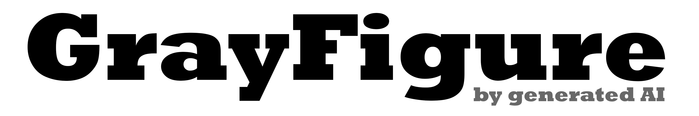
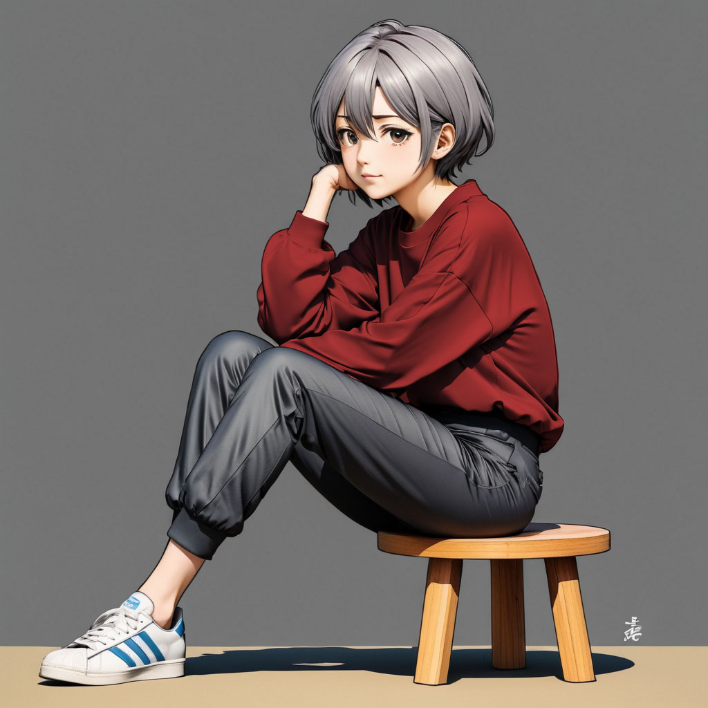
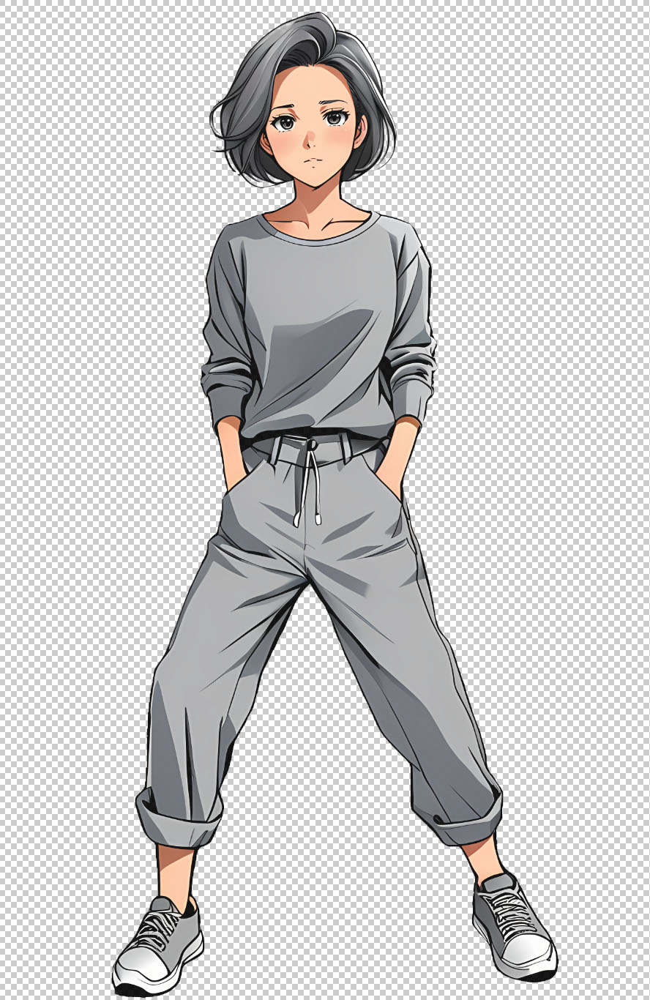

What is this?
AI-generated images focused on human poses.
These are divided by gender, age, pose, and drawing style.
For example,
the manga style for an 18-year-old woman sitting is "f18_sitting", with the submenu "manga".
You can also use the "Search" menu to search by characteristics.

gfi_f18_sitting01_manga03_base_1001.jpg
Why gray ?
Gray has no hue, so it is easy to layer colors.
The picture below shows red layered by multiplication.

It is also interesting to make img2img based on this.
About Search
Associative keywords are assigned to images using AI image recognition.
Therefore, keyword searches are possible in each and all categories.
With a mask
AI generated masks will be posted (WIP)
